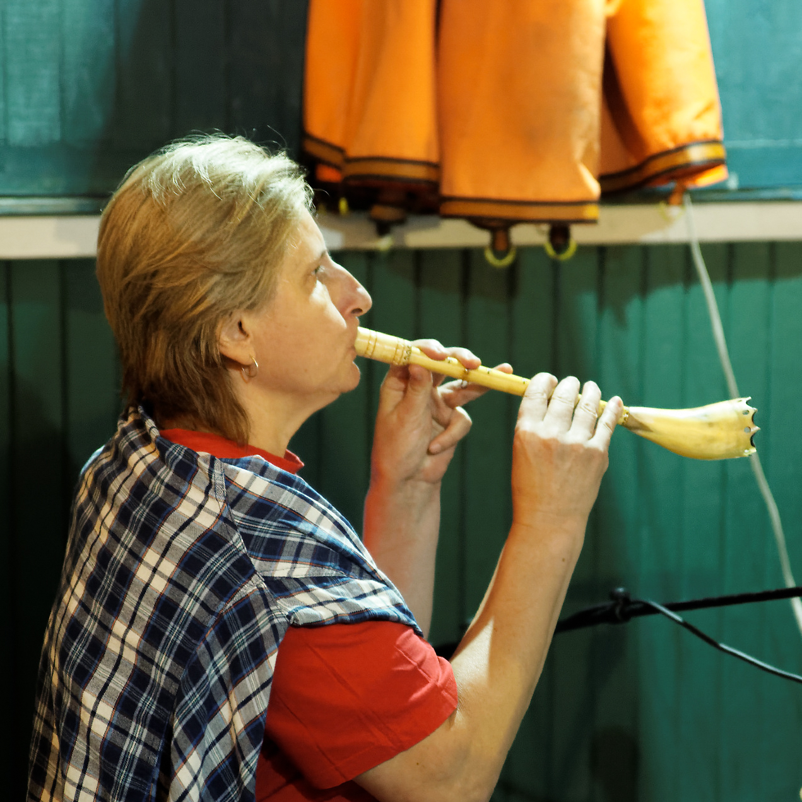
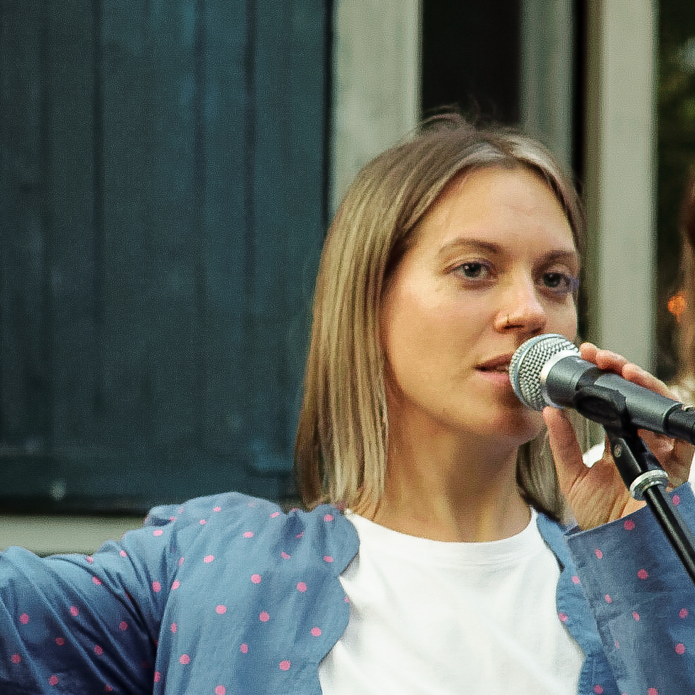
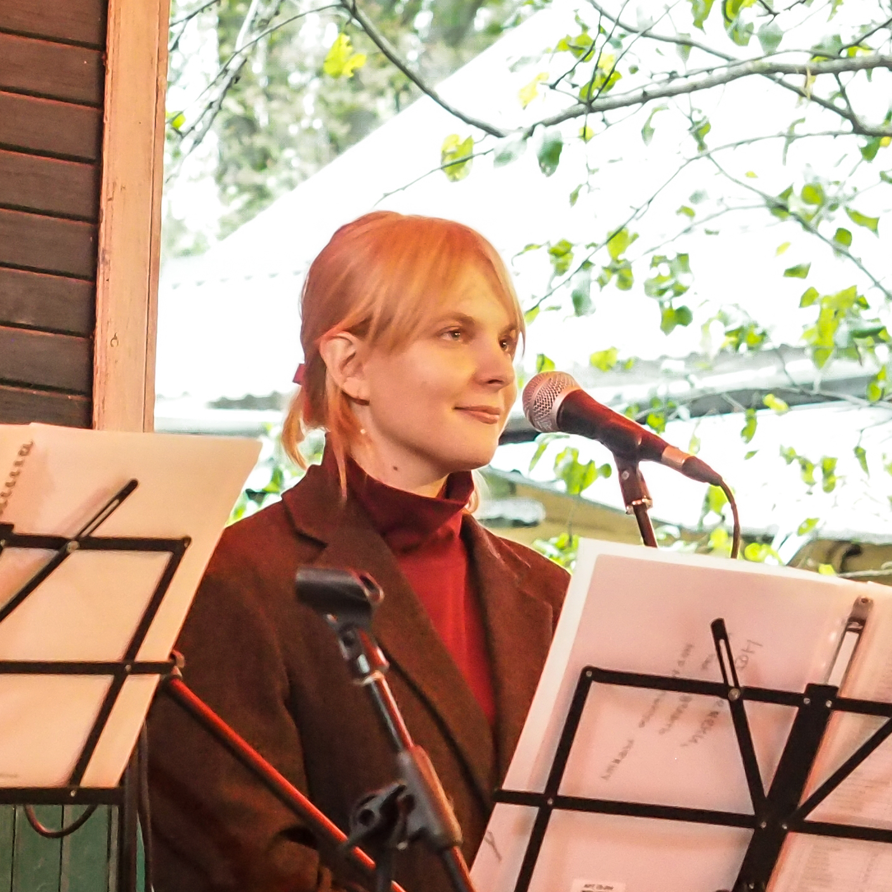
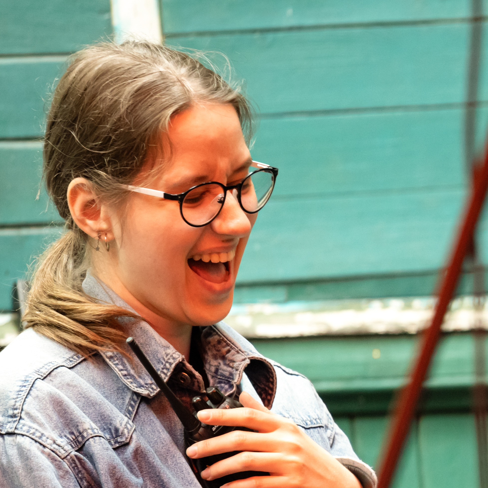
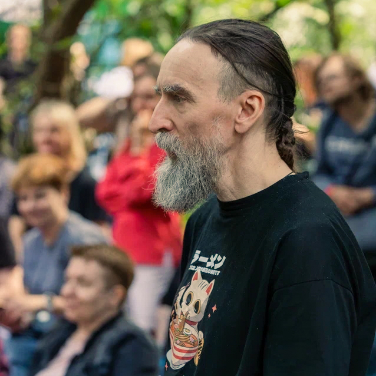
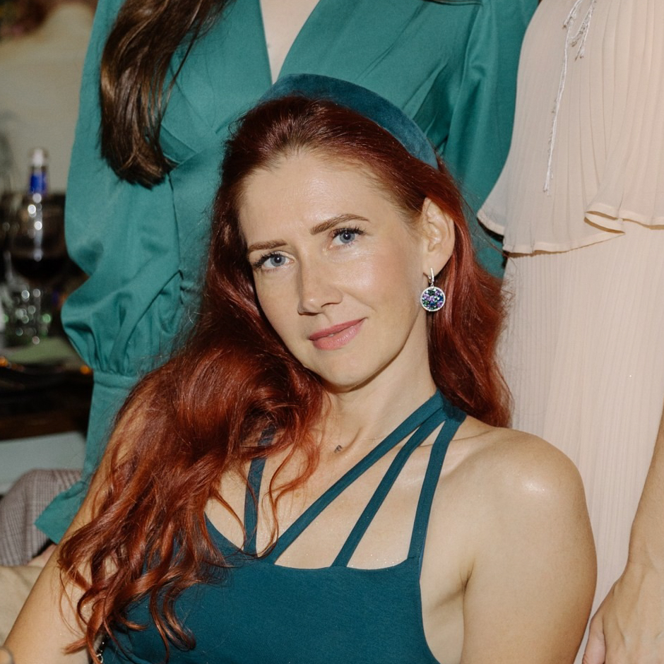

Команда
те, кто делает всё это возможным

Лена Лилеева
Хозяйка дома, основательница «Шоколадной фабрики» и «Палисадников в Переделкино», мультиинструменталистка и звукорежиссёр! Играет свои песни в проекте #лилеевафомина, звукорежиссёр концертов и спектаклей в театре Сац

Андрей Кузнецов
Главный по технической части; тоже сооснователь «Шоколадной фабрики» и «Палисадников в Переделкино», изредка берет в руки электрогитару, но чаще выполняет бытовое обслуживание площадки

Яна Сергиевская
Отвечает за коммуникации в разной форме и бесконечно делится идеями, курирует взаимодействие с арендаторами и командой помощников, организует концерты

Варя Борисёнок
Делает ансамбль «Бардовский проект» и играет на флейте возглавляет команду чистоты и порядка на мероприятиях; помогает словом и делом, умеет делать сметы, таблички и создавать мероприятия, а ещё поёт в ансамбле «Бардовский проект»
с нами работают

Настя Шукарёва
Звукорежиссёр, но иногда берётся за концерт в паре с кем-то и работает техником сцены; поёт в хоре

Дима Махов
Звукорежиссёр, может работать на длинных фестивалях (и не только), летом на месяц уезжает жить в лес

Катя Сокол
По жизни руководитель разработки, у нас же – для души – организует работу помощников на больших и сложных мероприятиях
резиденты площадки
Сабельфест
Самый большой фестиваль, который может разместить наша площадка! Организатор музыкальных событий Женя Сабельфельд уже несколько лет празднует свои дни рождения вот в таком формате: большой опен-эйр, 10 часов музыки, все радости музыкальной встречи в саду!
Бардовский проект
В течение всего года ансамбль делает концерты каждый месяц, а с мая по сентябрь проводит свои вечера-квартирники в «Палисадниках». Сохраняют традицию авторской песни 60-80х годов, в репертуаре бардовская классика — песни Сергея Никитина, Виктора Берковского, Юлия Кима, Юрия Визбора, Веры Матвеевой и других
#лилеевафомина
Музыкальный тандем Лены Лилеевой и Анны Фоминой. Плеут сложно устроенную музыкально- поэтическую из авторского материала и оркестра, который помещается на журнальный столик. Инди- хтонь, которую слушаешь и немного перерождаешься